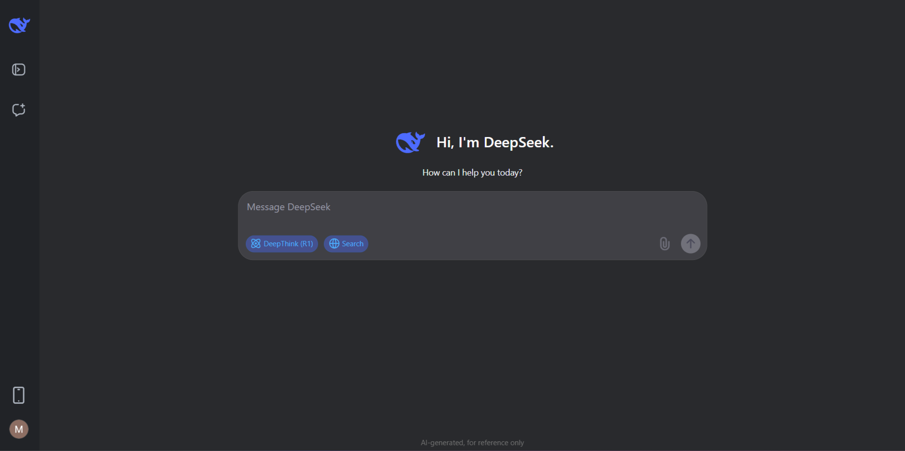

DeepSeek AI — это передовая нейросеть от китайских разработчиков, которая произвела революцию в области искусственного интеллекта в 2025 году. В отличие от многих конкурентов, DeepSeek работает без VPN в России и предлагает бесплатный доступ ко всем основным функциям.
🧠 Основной функционал
Генерация и анализ кода
DeepSeek поддерживает 338 языков программирования. Может писать код с нуля, оптимизировать существующий код, находить ошибки и объяснять сложные концепции. Особенно силен в Python, JavaScript, C++ и Go.
Написание и редактирование текстов
Создает статьи, техническую документацию, письма и креативные тексты на русском, английском и других языках. Умеет адаптировать стиль под целевую аудиторию и формальные требования.
Решение сложных задач
Особый режим DeepThink позволяет нейросети решать многошаговые задачи, показывая ход рассуждений. Идеально подходит для математических расчетов, анализа данных и логических задач.
🚀 Как использовать DeepSeek AI
- Регистрация: Доступна через Google, почту или Discord. Бесплатный аккаунт дает полный доступ ко всем функциям без ограничений.
- Основные режимы работы:
- Чат-помощник: Задавайте вопросы на естественном языке
- Режим программирования: Генерация и анализ кода
- DeepThink: Пошаговое решение сложных задач
- Загрузка файлов: Поддерживает PDF, DOCX, TXT, изображения (с распознаванием текста), Excel, PowerPoint и код на различных языках.
Пример использования:
Запрос: "Напиши функцию на Python, которая принимает список чисел и возвращает словарь с количеством четных и нечетных чисел"
💡 Уникальные возможности
Контекст 128K токенов
Огромное окно контекста позволяет работать с длинными документами, сохраняя понимание всего материала. Это в 4 раза больше, чем у ChatGPT-4.
Поиск в интернете
В режиме Search нейросеть ищет актуальную информацию в интернете и ссылается на источники, что гарантирует достоверность данных.
Локальная установка
Для разработчиков доступна локальная версия модели, которую можно запустить на своем компьютере (требуется 16+ ГБ ОЗУ).
⚙️ Технические характеристики
| Параметр | DeepSeek R1 | DeepSeek Coder |
|---|---|---|
| Архитектура | Transformer-based | Specialized Coder |
| Количество параметров | 176 миллиардов | 33 миллиарда |
| Окно контекста | 128K токенов | 16K токенов |
| Поддержка языков | 50+ | 338 языков программирования |
| Обучение на данных до | Июль 2024 | Июль 2024 |
⚠️ Ограничения и нюансы
- Актуальность данных: Знания нейросети ограничены июлем 2024 года. Для актуальной информации используйте режим Search.
- Распознавание изображений: Не поддерживает анализ графиков и сложных схем, только текст на изображениях.
- Голосовой ввод: Отсутствует в веб-версии, доступен только в мобильных приложениях.
- Коммерческое использование: Бесплатная версия разрешает коммерческое использование с указанием авторства.
💼 Примеры применения
Для разработчиков
Автодополнение кода, рефакторинг, генерация тестов, объяснение сложных алгоритмов, перевод кода между языками.
Для авторов и копирайтеров
Написание статей, генерация идей, корректура текстов, адаптация контента под разные платформы, создание технической документации.
Для исследователей
Анализ научных статей, генерация гипотез, помощь в написании исследований, обработка больших объемов текста.
Попробуйте DeepSeek прямо сейчас!
Создавайте код, пишите тексты и решайте сложные задачи с помощью передового ИИ
Начать использовать DeepSeek🔮 Заключение
DeepSeek AI устанавливает новый стандарт в мире искусственного интеллекта, предлагая бесплатный доступ к мощным инструментам для программирования, написания текстов и решения сложных задач. С поддержкой русского языка, огромным контекстным окном и специализированными режимами, DeepSeek станет незаменимым помощником для разработчиков, авторов, исследователей и всех, кто работает с информацией.
Интересный факт: Эта статья была подготовлена с помощью DeepSeek AI, демонстрируя возможности нейросети на практике.